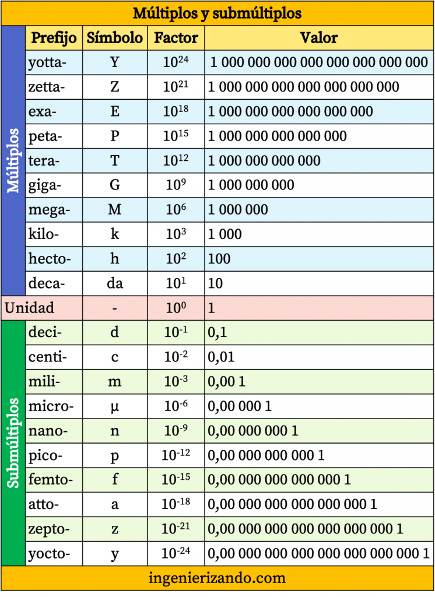

Los múltiplos y submúltiplos son prefijos utilizados para representar cantidades mayores o menores de una unidad base. Por ejemplo, el kilómetro (km) es un múltiplo del metro (m), y el milímetro (mm) es un submúltiplo.
Las unidades de conversión son factores utilizados para cambiar una cantidad de una unidad de medida a otra. Por ejemplo, convertir metros a kilómetros o gramos a kilogramos.
El Sistema Internacional de Unidades (SI) es el sistema de medición más utilizado en el mundo. Sus unidades base incluyen el metro (m), kilogramo (kg), segundo (s), amperio (A), kelvin (K) y mol (mol).
La ingeniería es la disciplina que aplica principios científicos y matemáticos para diseñar, construir y optimizar estructuras, máquinas, sistemas y procesos que mejoran la vida humana.
La ingeniería ha evolucionado desde la construcción de pirámides y acueductos en la antigüedad hasta las tecnologías modernas como la inteligencia artificial y la exploración espacial.
La ingeniería se divide en diversas ramas, como civil, mecánica, eléctrica, industrial, química, informática y biomédica. Cada una se enfoca en distintos problemas y soluciones tecnológicas.
Las tecnologías en ingeniería incluyen impresión 3D, automatización, nanotecnología, robótica y energías renovables, que permiten innovaciones en múltiples sectores industriales.